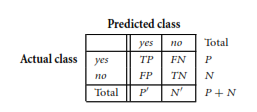
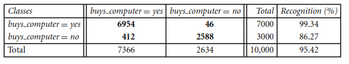

DEPLOYMENT#
Link website: https://nikilaili123.pythonanywhere.com/
MEMAHAMI DATA#
saya mengambil dataset yang sesuai dengan faktor resiko yang menjadi indikator sama dengan rujukan di atas, yaitu UCI Machine Learning BLOOD TRANSFUSION SERVICE CENTER yang dapat diakses melalui halaman: https://archive.ics.uci.edu/dataset/176/blood+transfusion+service+center
Data tersebut berfokus pada Menganalisis Prediksi Donasi Darah di Masa Depan. Indikator yang digunakan dalam data tersebut yaitu Recency, Frequency, Monetary, Time yang sesuai dengan indikator faktor resiko sebelumnya. Makanya saya menggunakan dataset ini karena sesuai degan refrensi di atas
Untuk Menganalisis Prediksi Donasi Darah di Masa Depan
Fitur: Recency dengan tipe data Integer adalah mengukur jumlah bulan sejak pendonor terakhir kali mendonorkan darah dan dapat menjadi indikator penting untuk memprediksi apakah mereka akan mendonorkan darah lagi dalam waktu dekat. Contoh: Jika donor terakhir kali menyumbang darah 3 bulan lalu, maka nilai Recency adalah 3.
Fitur: Frequency dengan tipe data Integer adalah mengukur jumlah total donasi darah yang telah dilakukan oleh pendonor. Seberapa sering seorang donor telah mendonorkan darahnya dapat membantu mengidentifikasi donor aktif yang dapat diandalkan. Contoh: Jika donor telah menyumbang darah sebanyak 5 kali, maka nilai Frequency adalah 5
Fitur: Monetary dengan tipe data Integer adalah mengukur total volume darah yang telah didonorkan oleh pendonor dalam satuan c.c. (cubic centimeters). Alat ukur yang paling umum yakni Kantong Datah memiliki skala mililiter (ml) atau centimeter kubik (cc).
Fitur: Time dengan tipe data Integer adalah mengukur jumlah bulan sejak pendonor pertama kali mendonorkan darah. Dapat digunakan untuk memprediksi perilaku donasi darah di masa depan.
Fitur Target: Donated_Blood Label target yang menunjukkan apakah donor mendonorkan darahnya dalam enam bulan terakhir (1) atau tidak (0)
Collecting data from web to dataframe#
pip install ucimlrepo
Requirement already satisfied: ucimlrepo in c:\users\nikir\appdata\local\programs\python\python310\lib\site-packages (0.0.7)
Requirement already satisfied: pandas>=1.0.0 in c:\users\nikir\appdata\local\programs\python\python310\lib\site-packages (from ucimlrepo) (2.2.2)
Requirement already satisfied: certifi>=2020.12.5 in c:\users\nikir\appdata\local\programs\python\python310\lib\site-packages (from ucimlrepo) (2024.6.2)
Requirement already satisfied: tzdata>=2022.7 in c:\users\nikir\appdata\local\programs\python\python310\lib\site-packages (from pandas>=1.0.0->ucimlrepo) (2024.1)
Requirement already satisfied: pytz>=2020.1 in c:\users\nikir\appdata\local\programs\python\python310\lib\site-packages (from pandas>=1.0.0->ucimlrepo) (2024.1)
Requirement already satisfied: python-dateutil>=2.8.2 in c:\users\nikir\appdata\local\programs\python\python310\lib\site-packages (from pandas>=1.0.0->ucimlrepo) (2.9.0.post0)
Requirement already satisfied: numpy>=1.22.4 in c:\users\nikir\appdata\local\programs\python\python310\lib\site-packages (from pandas>=1.0.0->ucimlrepo) (1.26.4)
Requirement already satisfied: six>=1.5 in c:\users\nikir\appdata\local\programs\python\python310\lib\site-packages (from python-dateutil>=2.8.2->pandas>=1.0.0->ucimlrepo) (1.16.0)
Note: you may need to restart the kernel to use updated packages.
WARNING: You are using pip version 21.2.3; however, version 24.1 is available.
You should consider upgrading via the 'C:\Users\NikiR\AppData\Local\Programs\Python\Python310\python.exe -m pip install --upgrade pip' command.
from ucimlrepo import fetch_ucirepo
import pandas as pd
# fetch dataset
datasets = fetch_ucirepo(id=176)
# data (as pandas dataframes)
X = datasets.data.features
y = datasets.data.targets
# Convert features and targets to pandas DataFrame
X_df = pd.DataFrame(X)
y_df = pd.DataFrame(y, columns=['Donated_Blood'])
# Add an 'ID' column to X_df
X_df.insert(0, 'ID', X_df.index)
# Concatenate features and targets horizontally
df_main = pd.concat([X_df, y_df], axis=1)
# Display the DataFrame as a table
print(df_main)
# Save the DataFrame to a CSV file
df_main.to_csv('blood_transfusion_data_with_id.csv', index=False)
print("Dataset telah disimpan ke dalam file 'blood_transfusion_data_with_id.csv'")
ID Recency Frequency Monetary Time Donated_Blood
0 0 2 50 12500 98 1
1 1 0 13 3250 28 1
2 2 1 16 4000 35 1
3 3 2 20 5000 45 1
4 4 1 24 6000 77 0
.. ... ... ... ... ... ...
743 743 23 2 500 38 0
744 744 21 2 500 52 0
745 745 23 3 750 62 0
746 746 39 1 250 39 0
747 747 72 1 250 72 0
[748 rows x 6 columns]
Dataset telah disimpan ke dalam file 'blood_transfusion_data_with_id.csv'
Importing data from API to dataframe#
df_main
| ID | Recency | Frequency | Monetary | Time | Donated_Blood | |
|---|---|---|---|---|---|---|
| 0 | 0 | 2 | 50 | 12500 | 98 | 1 |
| 1 | 1 | 0 | 13 | 3250 | 28 | 1 |
| 2 | 2 | 1 | 16 | 4000 | 35 | 1 |
| 3 | 3 | 2 | 20 | 5000 | 45 | 1 |
| 4 | 4 | 1 | 24 | 6000 | 77 | 0 |
| ... | ... | ... | ... | ... | ... | ... |
| 743 | 743 | 23 | 2 | 500 | 38 | 0 |
| 744 | 744 | 21 | 2 | 500 | 52 | 0 |
| 745 | 745 | 23 | 3 | 750 | 62 | 0 |
| 746 | 746 | 39 | 1 | 250 | 39 | 0 |
| 747 | 747 | 72 | 1 | 250 | 72 | 0 |
748 rows × 6 columns
Identifikasi data#
Konsep macam-macam tipe data
Atribut adalah bidang data, yang mewakili karakteristik atau fitur objek data. Hal ini berarti atribut, dimensi, fitur, dan variabel yang sering digunakan secara bergantian dalam literatur.
Nominal attributes berarti atribut yang nilainya berupa simbol atau nama yang merepresentasikan kategori atau status tertentu tanpa urutan yang berarti.
Binary attributes berarti atribut nominal dengan dua kategori atau status, biasanya 0 dan 1.
Ordinal attributes berarti atribut yang nilainya memiliki urutan yang berarti atau ranking, namun selisih antara nilai-nilai tersebut tidak diketahui.
Numeric attributes berarti atribut kuantitatif yang diukur dalam nilai integer atau real.
Untuk fitur dari dataset tersebut ada 4 yaitu seperti yang disebutkan diatas: Recency, Frequency, Monetary, Time. Sedangkan untuk targetnya adalah Donated_Blood.
df_main.info()
<class 'pandas.core.frame.DataFrame'>
RangeIndex: 748 entries, 0 to 747
Data columns (total 6 columns):
# Column Non-Null Count Dtype
--- ------ -------------- -----
0 ID 748 non-null int64
1 Recency 748 non-null int64
2 Frequency 748 non-null int64
3 Monetary 748 non-null int64
4 Time 748 non-null int64
5 Donated_Blood 748 non-null int64
dtypes: int64(6)
memory usage: 35.2 KB
df_main.describe()
| ID | Recency | Frequency | Monetary | Time | Donated_Blood | |
|---|---|---|---|---|---|---|
| count | 748.00000 | 748.000000 | 748.000000 | 748.000000 | 748.000000 | 748.000000 |
| mean | 373.50000 | 9.506684 | 5.514706 | 1378.676471 | 34.282086 | 0.237968 |
| std | 216.07329 | 8.095396 | 5.839307 | 1459.826781 | 24.376714 | 0.426124 |
| min | 0.00000 | 0.000000 | 1.000000 | 250.000000 | 2.000000 | 0.000000 |
| 25% | 186.75000 | 2.750000 | 2.000000 | 500.000000 | 16.000000 | 0.000000 |
| 50% | 373.50000 | 7.000000 | 4.000000 | 1000.000000 | 28.000000 | 0.000000 |
| 75% | 560.25000 | 14.000000 | 7.000000 | 1750.000000 | 50.000000 | 0.000000 |
| max | 747.00000 | 74.000000 | 50.000000 | 12500.000000 | 98.000000 | 1.000000 |
Penjelasan dari setiap fitur yang ada pada tabel diatas:
Taerget Variable: Donated_Blood.
Numerical Variable: Recency, Frequency, Monetary, Time
Mengimport library yang diperlukan untuk tahap-tahap yang akan dilakukan selanjutnya
import numpy as np
import pandas as pd
import matplotlib.pyplot as plt
import seaborn as sns
from sklearn.model_selection import train_test_split as split, GridSearchCV
from sklearn.ensemble import RandomForestClassifier
from sklearn.metrics import accuracy_score, confusion_matrix
Tabel Distribusi#
Pada tahap ini, akan disajikan tabel distribusi setiap kolom data dari dataset yang telah diambil
import matplotlib.pyplot as plt
# Mengambil semua kolom fitur
features = list(X.columns)
# Menghitung jumlah subplot yang diperlukan
num_features = len(features)
num_rows = (num_features + 1) // 2 # Pembulatan ke atas untuk jumlah baris
# Membuat subplot sesuai dengan jumlah fitur
fig, axs = plt.subplots(num_rows, 2, figsize=(12, num_rows*4))
# Melakukan plotting untuk setiap fitur
for i, feature in enumerate(features):
row = i // 2
col = i % 2
axs[row, col].hist(df_main[feature], bins=20, color='blue', alpha=0.5)
axs[row, col].set_title(f'Distribution of {feature}')
axs[row, col].set_xlabel(feature)
axs[row, col].set_ylabel('Frequency')
# Menghapus subplot yang tidak terpakai
if num_features % 2 == 1:
fig.delaxes(axs[num_rows-1, 1])
# Menyesuaikan layout
plt.tight_layout()
# Menampilkan plot
plt.show()
Tabel distribusi membantu memahami data tersebar untuk setiap fitur dalam dataset. Hal ini dapat membantu mengidentifikasi pola, outlier, dan tren dalam data. Terdapat outlier pada fitur Monetary
Kualitas Data#
Missing Values#
Mencari missing value apakah ada missing value di data ini
df_main.isnull().sum()
ID 0
Recency 0
Frequency 0
Monetary 0
Time 0
Donated_Blood 0
dtype: int64
Semua fitur colom tidak adanya missing value di data ini
missing_values = df_main.isnull()
missing_values.head(len(missing_values))
| ID | Recency | Frequency | Monetary | Time | Donated_Blood | |
|---|---|---|---|---|---|---|
| 0 | False | False | False | False | False | False |
| 1 | False | False | False | False | False | False |
| 2 | False | False | False | False | False | False |
| 3 | False | False | False | False | False | False |
| 4 | False | False | False | False | False | False |
| ... | ... | ... | ... | ... | ... | ... |
| 743 | False | False | False | False | False | False |
| 744 | False | False | False | False | False | False |
| 745 | False | False | False | False | False | False |
| 746 | False | False | False | False | False | False |
| 747 | False | False | False | False | False | False |
748 rows × 6 columns
Deteksi Outlier#
Melakukan deteksi outlier, untuk memperbaiki kualitas data.
Pada referensi yang didapat dari buku “Data Mining : Concept and Technique”:
Local Outlier Factor (LOF) adalah metode deteksi outlier yang didasarkan pada kepadatan lokal suatu titik data dalam kaitannya dengan tetangga terdekatnya. Metode ini bertujuan untuk mengidentifikasi outlier lokal dengan membandingkan kepadatan lokal dari suatu titik dengan kepadatan lokal dari tetangga-tetangganya. Berikut adalah komponen utama dan langkah-langkah perhitungan dalam LOF:
1. K-Tetangga Terdekat (K-Nearest Neighbors, K-NN)#
Jarak K (k-distance): Jarak dari titik $\( o \)\( ke tetangga terdekat ke-k. \)\( \text{k-distance}(o) = \text{dist}(o, o_k) \)\( di mana \)\( o_k \)\( adalah tetangga terdekat ke-k dari \)\( o \)$.
Lingkungan Jarak K (k-distance neighborhood): Himpunan titik-titik yang berada dalam jarak K dari $\( o \)\(. \)\( N_k(o) = \{ o' \mid \text{dist}(o, o') \leq \text{k-distance}(o) \} \)$
2. Jarak Jangkauan (Reachability Distance)#
Jarak jangkauan dari titik $\( o' \)\( ke titik \)\( o \)\( didefinisikan sebagai: \)\( \text{reachdist}_k(o', o) = \max(\text{k-distance}(o), \text{dist}(o', o)) \)$
3. Kepadatan Jangkauan Lokal (Local Reachability Density)#
Kepadatan jangkauan lokal $\( lrd_k(o) \)\( dari titik \)\( o \)\( adalah kebalikan dari rata-rata jarak jangkauan dari tetangga terdekatnya: \)\( lrd_k(o) = \frac{|N_k(o)|}{\sum_{o' \in N_k(o)} \text{reachdist}_k(o', o)} \)$
4. Faktor Outlier Lokal (Local Outlier Factor)#
Faktor outlier lokal $\( LOF_k(o) \)\( dari titik \)\( o \)\( adalah rata-rata dari rasio kepadatan jangkauan lokal \)\( o \)\( terhadap kepadatan jangkauan lokal dari tetangga terdekatnya: \)\( LOF_k(o) = \frac{\sum_{o' \in N_k(o)} \frac{lrd_k(o')}{lrd_k(o)}}{|N_k(o)|} \)$
import numpy as np
from sklearn.neighbors import LocalOutlierFactor
Data outlier sering kali mempengaruhi model data secara umum sehingga pengaruh dari data outlier tersebut harus dikurangi atau dihilangkan. Hal ini merujuk kepda https://ejurnal.its.ac.id/index.php/sains_seni/article/download/22520/3642
Proses perhitungan LOF untuk mendeteksi adanya outlier dengan 40 tetangga terdekat menggunakan jarak Euclidean (p=2).
df_main_lof = df_main.copy()
# Menggunakan semua kolom fitur untuk deteksi outlier
columns_for_lof = list(X.columns)
# Inisialisasi model LOF
lof = LocalOutlierFactor(n_neighbors=40, p=2)
# Mendeteksi outlier
outlier_scores = lof.fit_predict(X)
df_main_lof['LOF_Score'] = -lof.negative_outlier_factor_
# Menampilkan DataFrame dengan skor LOF
df_main_lof.head(len(df_main_lof))
| ID | Recency | Frequency | Monetary | Time | Donated_Blood | LOF_Score | |
|---|---|---|---|---|---|---|---|
| 0 | 0 | 2 | 50 | 12500 | 98 | 1 | 7.337012 |
| 1 | 1 | 0 | 13 | 3250 | 28 | 1 | 1.128121 |
| 2 | 2 | 1 | 16 | 4000 | 35 | 1 | 1.086435 |
| 3 | 3 | 2 | 20 | 5000 | 45 | 1 | 1.739193 |
| 4 | 4 | 1 | 24 | 6000 | 77 | 0 | 2.547053 |
| ... | ... | ... | ... | ... | ... | ... | ... |
| 743 | 743 | 23 | 2 | 500 | 38 | 0 | 1.247340 |
| 744 | 744 | 21 | 2 | 500 | 52 | 0 | 1.617478 |
| 745 | 745 | 23 | 3 | 750 | 62 | 0 | 1.484444 |
| 746 | 746 | 39 | 1 | 250 | 39 | 0 | 2.986089 |
| 747 | 747 | 72 | 1 | 250 | 72 | 0 | 7.599065 |
748 rows × 7 columns
Menampilkan beberapa data yang teridentifikasi sebagai outlier
print("Outlier data:")
for i, row in df_main_lof.iterrows():
if outlier_scores[i] == -1:
print(f"ID {row['ID']}, LOF Score: {row['LOF_Score']:.2f}")
Outlier data:
ID 0.0, LOF Score: 7.34
ID 3.0, LOF Score: 1.74
ID 4.0, LOF Score: 2.55
ID 9.0, LOF Score: 6.56
ID 10.0, LOF Score: 2.37
ID 35.0, LOF Score: 1.70
ID 44.0, LOF Score: 1.73
ID 55.0, LOF Score: 1.54
ID 56.0, LOF Score: 1.60
ID 61.0, LOF Score: 1.50
ID 100.0, LOF Score: 1.50
ID 106.0, LOF Score: 1.60
ID 115.0, LOF Score: 2.56
ID 184.0, LOF Score: 1.70
ID 241.0, LOF Score: 2.15
ID 252.0, LOF Score: 1.60
ID 256.0, LOF Score: 1.80
ID 295.0, LOF Score: 1.57
ID 306.0, LOF Score: 1.53
ID 313.0, LOF Score: 1.78
ID 314.0, LOF Score: 1.78
ID 341.0, LOF Score: 5.01
ID 362.0, LOF Score: 1.76
ID 370.0, LOF Score: 1.67
ID 372.0, LOF Score: 1.70
ID 392.0, LOF Score: 1.93
ID 398.0, LOF Score: 1.90
ID 402.0, LOF Score: 1.80
ID 427.0, LOF Score: 1.53
ID 430.0, LOF Score: 1.63
ID 431.0, LOF Score: 1.63
ID 439.0, LOF Score: 1.80
ID 441.0, LOF Score: 1.85
ID 442.0, LOF Score: 1.62
ID 443.0, LOF Score: 1.85
ID 448.0, LOF Score: 1.70
ID 469.0, LOF Score: 2.31
ID 473.0, LOF Score: 2.06
ID 486.0, LOF Score: 1.81
ID 489.0, LOF Score: 1.53
ID 490.0, LOF Score: 2.30
ID 491.0, LOF Score: 1.68
ID 492.0, LOF Score: 2.07
ID 493.0, LOF Score: 2.27
ID 494.0, LOF Score: 3.11
ID 495.0, LOF Score: 1.67
ID 496.0, LOF Score: 2.84
ID 497.0, LOF Score: 2.84
ID 498.0, LOF Score: 3.14
ID 499.0, LOF Score: 7.90
ID 500.0, LOF Score: 5.98
ID 501.0, LOF Score: 2.16
ID 502.0, LOF Score: 4.26
ID 503.0, LOF Score: 6.17
ID 504.0, LOF Score: 2.95
ID 505.0, LOF Score: 5.59
ID 506.0, LOF Score: 1.95
ID 508.0, LOF Score: 1.95
ID 517.0, LOF Score: 4.09
ID 528.0, LOF Score: 2.55
ID 532.0, LOF Score: 1.70
ID 603.0, LOF Score: 1.70
ID 650.0, LOF Score: 1.78
ID 663.0, LOF Score: 1.60
ID 669.0, LOF Score: 1.89
ID 670.0, LOF Score: 1.95
ID 677.0, LOF Score: 1.54
ID 681.0, LOF Score: 1.52
ID 707.0, LOF Score: 1.66
ID 713.0, LOF Score: 1.63
ID 719.0, LOF Score: 1.80
ID 731.0, LOF Score: 1.94
ID 742.0, LOF Score: 2.16
ID 744.0, LOF Score: 1.62
ID 746.0, LOF Score: 2.99
ID 747.0, LOF Score: 7.60
Berdasarkan output di atas, terlihat bahwa terdapat 12 data dengan nilai LOF
# Menampilkan data dengan ID 0, 9, 341, 494, 498, 499, 500, 502, 503, 517,dan 747
data_outlier = df_main_lof.loc[df_main_lof["ID"].isin([0, 9, 341, 494, 498, 499, 500, 502, 503, 517, 747])]
data_outlier
| ID | Recency | Frequency | Monetary | Time | Donated_Blood | LOF_Score | |
|---|---|---|---|---|---|---|---|
| 0 | 0 | 2 | 50 | 12500 | 98 | 1 | 7.337012 |
| 9 | 9 | 5 | 46 | 11500 | 98 | 1 | 6.561440 |
| 341 | 341 | 23 | 38 | 9500 | 98 | 0 | 5.010331 |
| 494 | 494 | 23 | 2 | 500 | 87 | 0 | 3.109203 |
| 498 | 498 | 40 | 1 | 250 | 40 | 0 | 3.136435 |
| 499 | 499 | 74 | 1 | 250 | 74 | 0 | 7.895752 |
| 500 | 500 | 2 | 43 | 10750 | 86 | 1 | 5.979730 |
| 502 | 502 | 2 | 34 | 8500 | 77 | 1 | 4.258933 |
| 503 | 503 | 2 | 44 | 11000 | 98 | 0 | 6.173657 |
| 517 | 517 | 4 | 33 | 8250 | 98 | 1 | 4.089336 |
| 747 | 747 | 72 | 1 | 250 | 72 | 0 | 7.599065 |
DATA PREPROCESSING#
Di data preprocessing melakukan perbaikan kualitas data karena terdeteksi adanya outlier pada data.
Mengatasi Outlier#
import numpy as np
# Define a threshold for outlier identification (consider adjusting based on analysis)
loftest_threshold = 3.0
# Filter rows with LOF scores exceeding the threshold
outlier_indices = df_main_lof[df_main_lof['LOF_Score'] > loftest_threshold].index
# Remove outlier rows (consider making a copy to avoid modifying original data)
df_filtered = df_main_lof.drop(outlier_indices)
# Print the number of outliers removed
print(f"jumlah outliers yang di hapus: {len(outlier_indices)}")
# Optional: Print the remaining data (consider using a copy if modifying original)
print("\nData setelah di hapus outliers:")
df_filtered
jumlah outliers yang di hapus: 12
Data setelah di hapus outliers:
| ID | Recency | Frequency | Monetary | Time | Donated_Blood | LOF_Score | |
|---|---|---|---|---|---|---|---|
| 1 | 1 | 0 | 13 | 3250 | 28 | 1 | 1.128121 |
| 2 | 2 | 1 | 16 | 4000 | 35 | 1 | 1.086435 |
| 3 | 3 | 2 | 20 | 5000 | 45 | 1 | 1.739193 |
| 4 | 4 | 1 | 24 | 6000 | 77 | 0 | 2.547053 |
| 5 | 5 | 4 | 4 | 1000 | 4 | 0 | 1.186107 |
| ... | ... | ... | ... | ... | ... | ... | ... |
| 742 | 742 | 16 | 3 | 750 | 86 | 0 | 2.159077 |
| 743 | 743 | 23 | 2 | 500 | 38 | 0 | 1.247340 |
| 744 | 744 | 21 | 2 | 500 | 52 | 0 | 1.617478 |
| 745 | 745 | 23 | 3 | 750 | 62 | 0 | 1.484444 |
| 746 | 746 | 39 | 1 | 250 | 39 | 0 | 2.986089 |
736 rows × 7 columns
DATA MODELLING#
X_train_model = df_filtered.drop(columns=['ID','Donated_Blood','LOF_Score'])
Y_train_model = df_filtered['Donated_Blood']
X_train_model
| Recency | Frequency | Monetary | Time | |
|---|---|---|---|---|
| 1 | 0 | 13 | 3250 | 28 |
| 2 | 1 | 16 | 4000 | 35 |
| 3 | 2 | 20 | 5000 | 45 |
| 4 | 1 | 24 | 6000 | 77 |
| 5 | 4 | 4 | 1000 | 4 |
| ... | ... | ... | ... | ... |
| 742 | 16 | 3 | 750 | 86 |
| 743 | 23 | 2 | 500 | 38 |
| 744 | 21 | 2 | 500 | 52 |
| 745 | 23 | 3 | 750 | 62 |
| 746 | 39 | 1 | 250 | 39 |
736 rows × 4 columns
Apa itu Klasifikasi data#
Klasifikasi data merupakan proses dua langkah, yang terdiri dari langkah pembelajaran (di mana model klasifikasi dibangun) dan langkah klasifikasi (di mana model digunakan untuk memprediksi label kelas untuk data tertentu). Prosesnya ditunjukkan untuk data pengajuan pinjaman
Konsep Gaussian Naive Bayes
menjelaskan bahwa Naïve Bayes adalah teknik klasifikasi statistik berdasarkan Teorema Bayes. Ini adalah salah satu algoritma pembelajaran terawasi yang paling sederhana. Pengklasifikasi Naïve Bayes adalah algoritma yang cepat, akurat, dan andal. Pengklasifikasi Naïve Bayes memiliki akurasi dan kecepatan tinggi pada kumpulan data besar.
Algoritma Naïve Bayes terdiri dari dua kata Naïve dan Bayes, yang dapat digambarkan sebagai:
Naïve: Disebut Naïve karena mengasumsikan kemunculan suatu ciri tertentu tidak bergantung pada kemunculan ciri lainnya. Misalnya jika buah dikenali berdasarkan warna, bentuk, dan rasa, maka buah yang berwarna merah, bulat, dan manis dikenali sebagai apel. Oleh karena itu, setiap fitur secara individual berkontribusi untuk mengidentifikasi bahwa itu adalah sebuah apel tanpa bergantung satu sama lain.
Bayes: Disebut Bayes karena bergantung pada prinsip Teorema Bayes.
Membuat Model Gaussian Naive Bayes dengan Code Python#
import pandas as pd
from sklearn.naive_bayes import GaussianNB
from sklearn.model_selection import train_test_split
from sklearn.metrics import accuracy_score
Menyalin df_main_lof ke dalam variabel df_main_gnb untuk dilakukan perhitungan Gaussian Naive Bayes dan menampilkan df_main_gnb yang telah disalin sebelumnya
df_main_gnb = df_filtered.copy()
df_main_gnb
| ID | Recency | Frequency | Monetary | Time | Donated_Blood | LOF_Score | |
|---|---|---|---|---|---|---|---|
| 1 | 1 | 0 | 13 | 3250 | 28 | 1 | 1.128121 |
| 2 | 2 | 1 | 16 | 4000 | 35 | 1 | 1.086435 |
| 3 | 3 | 2 | 20 | 5000 | 45 | 1 | 1.739193 |
| 4 | 4 | 1 | 24 | 6000 | 77 | 0 | 2.547053 |
| 5 | 5 | 4 | 4 | 1000 | 4 | 0 | 1.186107 |
| ... | ... | ... | ... | ... | ... | ... | ... |
| 742 | 742 | 16 | 3 | 750 | 86 | 0 | 2.159077 |
| 743 | 743 | 23 | 2 | 500 | 38 | 0 | 1.247340 |
| 744 | 744 | 21 | 2 | 500 | 52 | 0 | 1.617478 |
| 745 | 745 | 23 | 3 | 750 | 62 | 0 | 1.484444 |
| 746 | 746 | 39 | 1 | 250 | 39 | 0 | 2.986089 |
736 rows × 7 columns
features = pd.DataFrame(X_train_model).columns
target = pd.DataFrame(Y_train_model).columns
target
Index(['Donated_Blood'], dtype='object')
Melakukan pemisahan dataset menjadi dua bagian: set data training dan testing sebesar 20% untuk data testing dan 80% untuk data training. X_train untuk data training(features), X_test untuk data testing(features), y_train untuk data training(targets), y_test untuk data testing(targets).
X_train, X_test, y_train, y_test = train_test_split(X_train_model, Y_train_model, test_size = 0.2, random_state=5)
X_test
| Recency | Frequency | Monetary | Time | |
|---|---|---|---|---|
| 435 | 16 | 7 | 1750 | 93 |
| 242 | 4 | 3 | 750 | 25 |
| 74 | 2 | 2 | 500 | 4 |
| 454 | 21 | 1 | 250 | 21 |
| 350 | 11 | 1 | 250 | 11 |
| ... | ... | ... | ... | ... |
| 143 | 4 | 3 | 750 | 16 |
| 486 | 21 | 6 | 1500 | 86 |
| 23 | 2 | 6 | 1500 | 16 |
| 285 | 11 | 2 | 500 | 14 |
| 723 | 23 | 2 | 500 | 28 |
148 rows × 4 columns
Mengambil irisan x_train dan y_train dari df_main_gnb berdasarkan kolom ID dan disimpan ke dalam file excel dengan nama main_train.csv
# Mendapatkan irisan antara kolom 'ID' dari DataFrame df_main_gnb dan data x_train serta y_train
df_train = df_main_gnb[['ID']].merge(pd.DataFrame(X_train, columns=features), left_index=True, right_index=True)
df_train = df_train.merge(pd.DataFrame(y_train, columns=target), left_index=True, right_index=True)
# Simpan DataFrame df_train ke dalam file CSV
df_train.to_csv('main_train.csv', index=False)
Mengambil irisan x_test dan y_test dari df_main_gnb berdasarkan kolom ID dan disimpan ke dalam file excel dengan nama main_test.csv
# Mendapatkan irisan antara kolom 'ID' dari DataFrame df_main_gnb dan data x_test serta y_test
df_test = df_main_gnb[['ID']].merge(pd.DataFrame(X_test, columns=features), left_index=True, right_index=True)
df_test = df_test.merge(pd.DataFrame(y_test, columns=target), left_index=True, right_index=True)
# Simpan DataFrame df_test ke dalam file CSV
df_test.to_csv('main_test.csv', index=False)
Konsep Akurasi Model
Menggunakan data training untuk mendapatkan pengklasifikasi dan kemudian memperkirakan keakuratan model pembelajaran yang dihasilkan dapat mengakibatkan perkiraan terlalu optimistis yang menyesatkan karena terlalu mengkhususkan algoritma pembelajaran pada data. Sebaliknya, lebih baik mengukur keakuratan pengklasifikasi pada set pengujian yang terdiri dari tupel berlabel kelas yang tidak digunakan untuk melatih model.
Menggunakan confusion matrix seperti berikut
Maka : kita bisa menghitung akurasi dari suatu model dengan menentukan P’ dan N’ , dimana Tuple postifif ditambah Tuple negatif kita bagi dengan total Tuple baru kita mendapat akurasi model
Membuat model gaussian naive bayes dengan data training, setelah membuat model berdasarkan data training, lalu memprediksi data testing menggunakan model yang sebelumnya sudah dibuat menggunakan data training.
gaussian_model = GaussianNB()
gaussian_model = gaussian_model.fit(X_train, y_train)
y_pred = gaussian_model.predict(X_test)
accuracy_gnb = accuracy_score(y_pred, y_test)
print(f'Akurasi: {accuracy_gnb:.2%}')
Akurasi: 70.27%
Berdasarkan nilai diatas tingkat akurasinya 75,33%. Ini menunjukkan model tersebut dapat memprediksi dengan benar sekitar 75,33% kasus yang diberikan.
Mencoba memprediksi menggunakan model gaussian yang telah dibuat sebelumnya dengan data input 4, 23, 5750, 58 yang berasal dari data id ke-10
print('Hasil Prediksi Class: ', gaussian_model.predict([[4, 23, 5750, 58]]))
Hasil Prediksi Class: [1]
C:\Users\NikiR\AppData\Local\Programs\Python\Python310\lib\site-packages\sklearn\base.py:439: UserWarning: X does not have valid feature names, but GaussianNB was fitted with feature names
warnings.warn(
Membuat dataframe dari Dataframe dataset yang asli dan disimpan ke df_pred_gnb untuk dilakukan prediksi. Menambahkan kolom baru Target_before_prediciton yang diisi dengan data testing dan Predicted_Target yang diisi dengan data hasil prediksi. Menggabungkan kolom ID dari df_test dan df_pred_gnb. Mengurutkan df_pred berdasarkan kolom ID. Menampilkan ID, Target_before_prediciton, dan Predicted_target dari df_pred_gnb.
# Membuat DataFrame df_pred dari y_test dan y_pred
df_pred_gnb = pd.DataFrame()
df_pred_gnb['Target_before_prediction'] = y_test
df_pred_gnb['Predicted_Target'] = y_pred
# Menggabungkan kolom 'ID' dari df_test dengan DataFrame df_pred_gnb
df_pred_gnb['ID'] = df_test['ID']
# Mengurutkan DataFrame berdasarkan kolom 'ID'
df_pred_gnb = df_pred_gnb.sort_values(by='ID').reset_index(drop=True)
# Menampilkan DataFrame df_pred_gnb yang diurutkan
df_pred_gnb = df_pred_gnb[['ID', 'Target_before_prediction', 'Predicted_Target']]
df_pred_gnb
| ID | Target_before_prediction | Predicted_Target | |
|---|---|---|---|
| 0 | 4 | 0 | 1 |
| 1 | 8 | 1 | 0 |
| 2 | 23 | 1 | 0 |
| 3 | 25 | 0 | 1 |
| 4 | 30 | 0 | 1 |
| ... | ... | ... | ... |
| 143 | 723 | 0 | 0 |
| 144 | 737 | 0 | 0 |
| 145 | 740 | 0 | 0 |
| 146 | 741 | 0 | 0 |
| 147 | 744 | 0 | 0 |
148 rows × 3 columns
Menampilkan df_diff_gnb yang nilai Target_before_prediction dan Predicted_Target berbeda dari df_pred_gnb.
# Memfilter baris yang memiliki nilai yang berbeda antara kolom 'Target_before_prediction' dan 'Predicted_Target'
df_diff_gnb = df_pred_gnb[df_pred_gnb['Target_before_prediction'] != df_pred_gnb['Predicted_Target']]
# Menampilkan DataFrame yang telah difilter
df_diff_gnb
| ID | Target_before_prediction | Predicted_Target | |
|---|---|---|---|
| 0 | 4 | 0 | 1 |
| 1 | 8 | 1 | 0 |
| 2 | 23 | 1 | 0 |
| 3 | 25 | 0 | 1 |
| 4 | 30 | 0 | 1 |
| 5 | 35 | 1 | 0 |
| 6 | 37 | 1 | 0 |
| 7 | 39 | 1 | 0 |
| 8 | 42 | 1 | 0 |
| 11 | 54 | 1 | 0 |
| 14 | 74 | 1 | 0 |
| 19 | 110 | 1 | 0 |
| 20 | 119 | 1 | 0 |
| 21 | 122 | 1 | 0 |
| 22 | 123 | 1 | 0 |
| 24 | 126 | 1 | 0 |
| 29 | 145 | 1 | 0 |
| 30 | 150 | 1 | 0 |
| 31 | 153 | 1 | 0 |
| 32 | 165 | 1 | 0 |
| 34 | 178 | 1 | 0 |
| 35 | 180 | 1 | 0 |
| 36 | 195 | 1 | 0 |
| 44 | 242 | 1 | 0 |
| 45 | 252 | 1 | 0 |
| 47 | 263 | 1 | 0 |
| 51 | 287 | 1 | 0 |
| 52 | 288 | 1 | 0 |
| 59 | 318 | 1 | 0 |
| 62 | 333 | 1 | 0 |
| 63 | 338 | 1 | 0 |
| 101 | 512 | 0 | 1 |
| 103 | 516 | 1 | 0 |
| 104 | 540 | 1 | 0 |
| 105 | 544 | 0 | 1 |
| 107 | 549 | 1 | 0 |
| 108 | 551 | 1 | 0 |
| 109 | 568 | 1 | 0 |
| 111 | 576 | 1 | 0 |
| 113 | 593 | 1 | 0 |
| 119 | 624 | 1 | 0 |
| 123 | 639 | 1 | 0 |
| 124 | 640 | 1 | 0 |
| 130 | 667 | 1 | 0 |
Membuat Model K-Nearest Neighbors (KNN) dengan Code Python#
Mengimport library dari pandas dan sklearn untuk melakukan modelling K-Nearest Neighbors (KNN) menggunakan code python
import pandas as pd
from sklearn.neighbors import KNeighborsClassifier
from sklearn.model_selection import train_test_split
from sklearn.metrics import accuracy_score
Menyalin df_main_lof ke dalam variabel df_main_knn untuk dilakukan perhitungan K-Nearest Neighbors (KNN) dan menampilkan df_main_knn yang telah disalin sebelumnya
# Copy dataset untuk menjaga konsistensi
df_main_knn = df_filtered.copy()
df_main_knn
| ID | Recency | Frequency | Monetary | Time | Donated_Blood | LOF_Score | |
|---|---|---|---|---|---|---|---|
| 1 | 1 | 0 | 13 | 3250 | 28 | 1 | 1.128121 |
| 2 | 2 | 1 | 16 | 4000 | 35 | 1 | 1.086435 |
| 3 | 3 | 2 | 20 | 5000 | 45 | 1 | 1.739193 |
| 4 | 4 | 1 | 24 | 6000 | 77 | 0 | 2.547053 |
| 5 | 5 | 4 | 4 | 1000 | 4 | 0 | 1.186107 |
| ... | ... | ... | ... | ... | ... | ... | ... |
| 742 | 742 | 16 | 3 | 750 | 86 | 0 | 2.159077 |
| 743 | 743 | 23 | 2 | 500 | 38 | 0 | 1.247340 |
| 744 | 744 | 21 | 2 | 500 | 52 | 0 | 1.617478 |
| 745 | 745 | 23 | 3 | 750 | 62 | 0 | 1.484444 |
| 746 | 746 | 39 | 1 | 250 | 39 | 0 | 2.986089 |
736 rows × 7 columns
Melakukan pemisahan dataset menjadi dua bagian: set data training dan testing sebesar 20% untuk data testing dan 80% untuk data training. X_train untuk data training(features), X_test untuk data testing(features), y_train untuk data training(targets), y_test untuk data testing(targets).
X_train, X_test, y_train, y_test = train_test_split(X_train_model, Y_train_model, test_size=0.2, random_state=5)
Membuat model K-Nearest Neighbors (KNN) dengan 40 tetangga terdekat menggunakan jarak Euclidean (p=2), setelah membuat model berdasarkan data training, lalu memprediksi data testing menggunakan model yang sebelumnya sudah dibuat menggunakan data training.
# Inisialisasi model KNN dengan jumlah tetangga k = 40
knn_model = KNeighborsClassifier(n_neighbors=5, p=2, )
knn_model.fit(X_train, y_train)
y_pred_knn = knn_model.predict(X_test)
# Hitung akurasi
accuracy_knn = accuracy_score(y_pred_knn, y_test)
print(f'Akurasi KNN: {accuracy_knn:.2%}')
Akurasi KNN: 75.68%
import pickle
filename = 'knn.sav'
pickle.dump(knn_model, open(filename, 'wb'))
Berdasarkan nilai diatas tingkat akurasinya 75,00%. Ini menunjukkan model tersebut dapat memprediksi dengan benar sekitar 75,00% kasus yang diberikan.
Mencoba memprediksi menggunakan model gaussian yang telah dibuat sebelumnya dengan data input 4, 23, 5750, 58 yang berasal dari data id ke-10
print('Hasil Prediksi Class KNN: ', knn_model.predict([[4, 23, 5750, 58]]))
Hasil Prediksi Class KNN: [0]
C:\Users\NikiR\AppData\Local\Programs\Python\Python310\lib\site-packages\sklearn\base.py:439: UserWarning: X does not have valid feature names, but KNeighborsClassifier was fitted with feature names
warnings.warn(
Membuat dataframe dari Dataframe dataset yang asli dan disimpan ke df_pred_knn untuk dilakukan prediksi. Menambahkan kolom baru Target_before_prediciton yang diisi dengan data testing dan Predicted_Target yang diisi dengan data hasil prediksi. Menggabungkan kolom ID dari df_test dan df_pred_knn. Mengurutkan df_pred berdasarkan kolom ID. Menampilkan ID, Target_before_prediciton, dan Predicted_target dari df_pred_knn.
# Membuat DataFrame df_pred_knn dari y_test dan y_pred_knn
df_pred_knn = pd.DataFrame()
df_pred_knn['Target_before_prediction'] = y_test
df_pred_knn['Predicted_Target'] = y_pred_knn
# Menggabungkan kolom 'ID' dari df_test dengan DataFrame df_pred_knn
df_pred_knn['ID'] = df_test['ID']
# Mengurutkan DataFrame berdasarkan kolom 'ID'
df_pred_knn = df_pred_knn.sort_values(by='ID').reset_index(drop=True)
# Menampilkan DataFrame df_pred_knn yang diurutkan
df_pred_knn = df_pred_knn[['ID', 'Target_before_prediction', 'Predicted_Target']]
df_pred_knn
| ID | Target_before_prediction | Predicted_Target | |
|---|---|---|---|
| 0 | 4 | 0 | 0 |
| 1 | 8 | 1 | 0 |
| 2 | 23 | 1 | 1 |
| 3 | 25 | 0 | 1 |
| 4 | 30 | 0 | 1 |
| ... | ... | ... | ... |
| 143 | 723 | 0 | 0 |
| 144 | 737 | 0 | 0 |
| 145 | 740 | 0 | 0 |
| 146 | 741 | 0 | 0 |
| 147 | 744 | 0 | 0 |
148 rows × 3 columns
Menampilkan df_diff_knn yang nilai Target_before_prediction dan Predicted_Target berbeda dari df_pred_knn.
# Memfilter baris yang memiliki nilai yang berbeda antara kolom 'Target_before_prediction' dan 'Predicted_Target'
df_diff_knn = df_pred_knn[df_pred_knn['Target_before_prediction'] != df_pred_knn['Predicted_Target']]
# Menampilkan DataFrame yang telah difilter
df_diff_knn
| ID | Target_before_prediction | Predicted_Target | |
|---|---|---|---|
| 1 | 8 | 1 | 0 |
| 3 | 25 | 0 | 1 |
| 4 | 30 | 0 | 1 |
| 12 | 68 | 0 | 1 |
| 14 | 74 | 1 | 0 |
| 17 | 101 | 1 | 0 |
| 18 | 106 | 0 | 1 |
| 19 | 110 | 1 | 0 |
| 20 | 119 | 1 | 0 |
| 21 | 122 | 1 | 0 |
| 22 | 123 | 1 | 0 |
| 29 | 145 | 1 | 0 |
| 30 | 150 | 1 | 0 |
| 31 | 153 | 1 | 0 |
| 32 | 165 | 1 | 0 |
| 34 | 178 | 1 | 0 |
| 35 | 180 | 1 | 0 |
| 36 | 195 | 1 | 0 |
| 44 | 242 | 1 | 0 |
| 45 | 252 | 1 | 0 |
| 47 | 263 | 1 | 0 |
| 48 | 269 | 0 | 1 |
| 51 | 287 | 1 | 0 |
| 52 | 288 | 1 | 0 |
| 59 | 318 | 1 | 0 |
| 62 | 333 | 1 | 0 |
| 63 | 338 | 1 | 0 |
| 102 | 515 | 0 | 1 |
| 108 | 551 | 1 | 0 |
| 109 | 568 | 1 | 0 |
| 111 | 576 | 1 | 0 |
| 113 | 593 | 1 | 0 |
| 119 | 624 | 1 | 0 |
| 123 | 639 | 1 | 0 |
| 124 | 640 | 1 | 0 |
| 130 | 667 | 1 | 0 |
Mencetak akurasi model Gaussian Naive Bayes dan KNN , lalu menentukan model mana yang lebih baik berdasarkan akurasi
# Compare with Gaussian Naive Bayes Model
print(f'Akurasi Gaussian Naive Bayes: {accuracy_gnb:.2%}')
print(f'Akurasi K-Nearest Neighbors: {accuracy_knn:.2%}')
if accuracy_knn > accuracy_gnb:
print("Model K-Nearest Neighbors (KNN) memiliki akurasi lebih tinggi dan lebih baik untuk deployment.")
else:
print("Model Gaussian Naive Bayes memiliki akurasi lebih tinggi dan lebih baik untuk deployment.")
Akurasi Gaussian Naive Bayes: 70.27%
Akurasi K-Nearest Neighbors: 75.68%
Model K-Nearest Neighbors (KNN) memiliki akurasi lebih tinggi dan lebih baik untuk deployment.
Membuat Model Classifier dengan Konsep Ensemble Learning Stacking#
c1 = KNeighborsClassifier(n_neighbors=20, p=1 )
c1.fit(X_train, y_train)
p1_train = c1.predict(X_train)
c2 = KNeighborsClassifier(n_neighbors=10, p=2)
c2.fit(X_train, y_train)
p2_train = c2.predict(X_train)
p1_series = pd.Series(p1_train, index=y_train.index, name='p1')
p2_series = pd.Series(p2_train, index=y_train.index, name='p2')
# Concatenate predictions and y_train
df_meta = pd.concat([p1_series, p2_series], axis=1)
df_meta.columns = ['p1', 'p2']
df_meta
| p1 | p2 | |
|---|---|---|
| 51 | 0 | 0 |
| 324 | 0 | 0 |
| 249 | 0 | 0 |
| 275 | 0 | 0 |
| 238 | 0 | 0 |
| ... | ... | ... |
| 75 | 0 | 0 |
| 403 | 0 | 0 |
| 120 | 0 | 0 |
| 712 | 0 | 0 |
| 208 | 0 | 0 |
588 rows × 2 columns
from sklearn.model_selection import train_test_split
from sklearn.naive_bayes import GaussianNB
from sklearn.metrics import accuracy_score
from sklearn.preprocessing import LabelEncoder
# Mengubah nilai string menjadi numerik menggunakan Label Encoding
label_encoder = LabelEncoder()
df_meta['p1'] = label_encoder.fit_transform(df_meta['p1'])
df_meta['p2'] = label_encoder.fit_transform(df_meta['p2'])
df_meta[['p1', 'p2']]
gnb_model = GaussianNB()
gnb_model.fit(df_meta, y_train)
# Membuat prediksi pada set test
# meta_predictions = gnb_model.predict(X_test)
# accuracy_meta = accuracy_score(y_test, meta_predictions)
# print(accuracy_meta)
GaussianNB()In a Jupyter environment, please rerun this cell to show the HTML representation or trust the notebook.
On GitHub, the HTML representation is unable to render, please try loading this page with nbviewer.org.
GaussianNB()
p1_test = c1.predict(X_test)
p2_test = c2.predict(X_test)
p1_series2 = pd.Series(p1_test, index=y_test.index, name='p1')
p2_series2 = pd.Series(p2_test, index=y_test.index, name='p2')
# Concatenate predictions and y_train
df_meta_test = pd.concat([p1_series2, p2_series2], axis=1)
df_meta_test.columns = ['p1', 'p2']
df_meta_test['p1'] = label_encoder.fit_transform(df_meta_test['p1'])
df_meta_test['p2'] = label_encoder.fit_transform(df_meta_test['p2'])
df_meta_test[['p1', 'p2']]
predictions = gnb_model.predict(df_meta_test)
accuracy_meta = accuracy_score(y_test, predictions)
print(accuracy_meta)
0.75
Ensemble Learning Stacking Menggunakan Library Sklearn#
pip install mlxtend
Requirement already satisfied: mlxtend in c:\users\nikir\appdata\local\programs\python\python310\lib\site-packages (0.23.1)
Requirement already satisfied: pandas>=0.24.2 in c:\users\nikir\appdata\local\programs\python\python310\lib\site-packages (from mlxtend) (2.2.2)
Requirement already satisfied: matplotlib>=3.0.0 in c:\users\nikir\appdata\local\programs\python\python310\lib\site-packages (from mlxtend) (3.9.0)
Requirement already satisfied: scikit-learn>=1.0.2 in c:\users\nikir\appdata\local\programs\python\python310\lib\site-packages (from mlxtend) (1.2.2)
Requirement already satisfied: numpy>=1.16.2 in c:\users\nikir\appdata\local\programs\python\python310\lib\site-packages (from mlxtend) (1.26.4)
Requirement already satisfied: joblib>=0.13.2 in c:\users\nikir\appdata\local\programs\python\python310\lib\site-packages (from mlxtend) (1.4.2)
Requirement already satisfied: scipy>=1.2.1 in c:\users\nikir\appdata\local\programs\python\python310\lib\site-packages (from mlxtend) (1.13.1)
Requirement already satisfied: packaging>=20.0 in c:\users\nikir\appdata\local\programs\python\python310\lib\site-packages (from matplotlib>=3.0.0->mlxtend) (24.1)
Requirement already satisfied: pillow>=8 in c:\users\nikir\appdata\local\programs\python\python310\lib\site-packages (from matplotlib>=3.0.0->mlxtend) (10.3.0)
Requirement already satisfied: kiwisolver>=1.3.1 in c:\users\nikir\appdata\local\programs\python\python310\lib\site-packages (from matplotlib>=3.0.0->mlxtend) (1.4.5)
Requirement already satisfied: fonttools>=4.22.0 in c:\users\nikir\appdata\local\programs\python\python310\lib\site-packages (from matplotlib>=3.0.0->mlxtend) (4.53.0)
Requirement already satisfied: python-dateutil>=2.7 in c:\users\nikir\appdata\local\programs\python\python310\lib\site-packages (from matplotlib>=3.0.0->mlxtend) (2.9.0.post0)
Requirement already satisfied: contourpy>=1.0.1 in c:\users\nikir\appdata\local\programs\python\python310\lib\site-packages (from matplotlib>=3.0.0->mlxtend) (1.2.1)
Requirement already satisfied: cycler>=0.10 in c:\users\nikir\appdata\local\programs\python\python310\lib\site-packages (from matplotlib>=3.0.0->mlxtend) (0.12.1)
Requirement already satisfied: pyparsing>=2.3.1 in c:\users\nikir\appdata\local\programs\python\python310\lib\site-packages (from matplotlib>=3.0.0->mlxtend) (3.1.2)
Requirement already satisfied: tzdata>=2022.7 in c:\users\nikir\appdata\local\programs\python\python310\lib\site-packages (from pandas>=0.24.2->mlxtend) (2024.1)
Requirement already satisfied: pytz>=2020.1 in c:\users\nikir\appdata\local\programs\python\python310\lib\site-packages (from pandas>=0.24.2->mlxtend) (2024.1)
Requirement already satisfied: six>=1.5 in c:\users\nikir\appdata\local\programs\python\python310\lib\site-packages (from python-dateutil>=2.7->matplotlib>=3.0.0->mlxtend) (1.16.0)
Requirement already satisfied: threadpoolctl>=2.0.0 in c:\users\nikir\appdata\local\programs\python\python310\lib\site-packages (from scikit-learn>=1.0.2->mlxtend) (3.5.0)
Note: you may need to restart the kernel to use updated packages.
WARNING: You are using pip version 21.2.3; however, version 24.1 is available.
You should consider upgrading via the 'C:\Users\NikiR\AppData\Local\Programs\Python\Python310\python.exe -m pip install --upgrade pip' command.
X_train_model
| Recency | Frequency | Monetary | Time | |
|---|---|---|---|---|
| 1 | 0 | 13 | 3250 | 28 |
| 2 | 1 | 16 | 4000 | 35 |
| 3 | 2 | 20 | 5000 | 45 |
| 4 | 1 | 24 | 6000 | 77 |
| 5 | 4 | 4 | 1000 | 4 |
| ... | ... | ... | ... | ... |
| 742 | 16 | 3 | 750 | 86 |
| 743 | 23 | 2 | 500 | 38 |
| 744 | 21 | 2 | 500 | 52 |
| 745 | 23 | 3 | 750 | 62 |
| 746 | 39 | 1 | 250 | 39 |
736 rows × 4 columns
X_train, X_test, y_train, y_test = train_test_split(X_train_model, Y_train_model, test_size=0.2, random_state=5)
from sklearn.model_selection import train_test_split, cross_val_score
from sklearn.linear_model import LogisticRegression
from sklearn.neighbors import KNeighborsClassifier
from sklearn.naive_bayes import GaussianNB
from sklearn.ensemble import RandomForestClassifier
from mlxtend.classifier import StackingClassifier
from sklearn.metrics import accuracy_score
import pandas as pd
import warnings
warnings.simplefilter('ignore')
clf1 = KNeighborsClassifier(n_neighbors=5)
clf2 = RandomForestClassifier(random_state=10)
clf3 = GaussianNB()
lr = LogisticRegression()
sclf = StackingClassifier(classifiers=[clf1, clf2, clf3], meta_classifier=lr, use_probas=True, average_probas=False)
print('3-fold cross validation:\n')
# Melakukan cross-validation untuk setiap classifier dan stacking classifier
for clf, label in zip([clf1, clf2, clf3, sclf],
['KNN',
'Random Forest',
'Naive Bayes',
'StackingClassifier']):
try:
scores = cross_val_score(clf, X_train, y_train, cv=3, scoring='accuracy', error_score='raise')
print("Accuracy: %0.2f (+/- %0.2f) [%s]"
% (scores.mean(), scores.std(), label))
except ValueError as e:
print(f"Error for {label}: {e}")
# Melatih StackingClassifier pada data training
try:
sclf.fit(X_train, y_train)
# Membuat prediksi pada data test
y_pred = sclf.predict(X_test)
# Menghitung akurasi pada set test
accuracy = accuracy_score(y_test, y_pred)
print(f'Accuracy of StackingClassifier on test set: {accuracy}')
except ValueError as e:
print(f"Error during fitting or predicting with StackingClassifier: {e}")
3-fold cross validation:
Accuracy: 0.75 (+/- 0.02) [KNN]
Accuracy: 0.77 (+/- 0.03) [Random Forest]
Accuracy: 0.78 (+/- 0.02) [Naive Bayes]
Accuracy: 0.76 (+/- 0.02) [StackingClassifier]
Accuracy of StackingClassifier on test set: 0.7027027027027027
print('Hasil Prediksi Class: ', sclf.predict([[2, 20, 5000, 45]]))
Hasil Prediksi Class: [1]
IMPLEMENTASI#
![Created in deepnote.com]() Created in Deepnote
Created in Deepnote